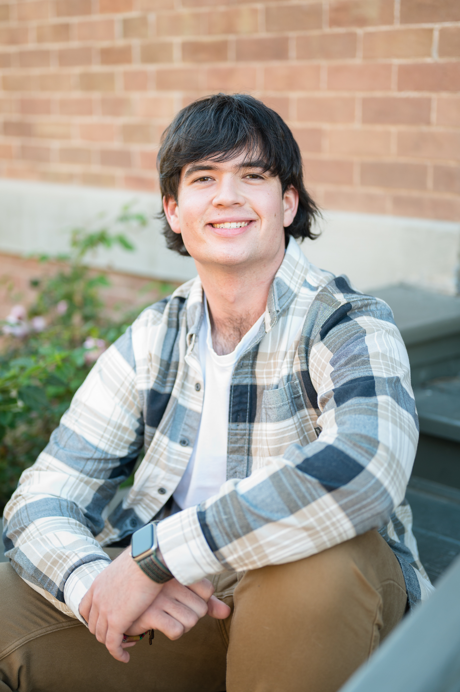

Brandon Forseth
Currently attending the University of Notre Dame for a degree in Computer Engineering with a minor in Engineering Corporate Practice

Im currently exploring my interests in engineering in and out of class with a variety of clubs like CS4Good and IRISHSAT (links can be found below).
My interests right now are split between computer software and hardware although right now my goal is to go into the semiconductor field after graduation.
However, I will take any opportunities to narrow down what I'm truly passionate about. As of right now, in IRISHSAT I will probably end up working on either PCBs
or state based programing for the club's CubeSat. Please reach out to me for any inquiries.
Socials:
Email: brandonfor77@gmail.com
Instagram: @brndnfrs
Club Links:
IRISHSAT
CS4Good